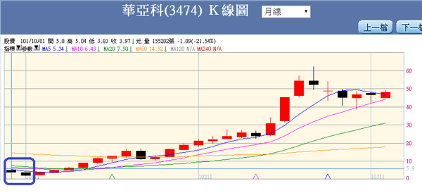

價值投資法的盲點與缺點（一）
我想全世界大概只有沒有多少投資人會否認價值投資法這個理論，我是其中之一，在投資界，風行了三四十年的價值投資法，儼然成為主流思潮，多少投資新手懷抱著效法「華倫巴菲特」的夢想而來，卻多數鍛羽而歸。
總經分析法藉由股票以外的客觀數據，依據經驗來探測「總體經濟是否從過熱邁向衰退」，進而提供「賣出部位」的訊號。簡單的說，總體經濟分析法的目的是「找出大環境或大盤的絕對與相對高點」，只要能夠知道總體環境由盛轉衰的種種訊號，投資人便能夠從容不迫地在高點腳底抹由，避開大空頭的風險。
總經分析法的精髓在於，如果投資人認識大空頭市場來臨前的種種跡象，只要投資人能在平均五年才一次的大空頭來臨前出脫所有部位，也就是說如果能在高點出脫，不論投資人所建立的部位位置到底是谷底？山腰？甚至接近山頂，都可以成為贏家。
價值投資分析法雖然有很多不同方法，但歸納其各家學說的共同特點後，不外乎，想要藉由個別公司的財務數據，計算出一家公司的價值，目的是「一旦該公司的股價跌到價值區間的低檔」，投資人可以買到最便宜或相對便宜的股價。
總體經濟分析法和價值投資分析法不同在於：
|
|
總體經濟分析法 |
價值投資分析法 |
|
位置判定 |
衡量大盤高檔 |
探索個股股價低檔 |
|
判定依據 |
總體經濟客觀大數據 |
個別公司非客觀財報 |
|
投資哲學 |
閃躲巨型空頭 |
魯莽摸底 |
|
買進依據 |
只要總經數據尚未出現轉弱之前都可以買進與持有 |
必須默默等待股價落底 |
|
賣出依據 |
總經數據出現空頭訊號 |
沒有明確的賣出理論 |
當然，投資並不能只依靠總體經濟分析法，因為總體經濟分析法只能告訴投資人「現階段屬於多頭或空頭」的大環境分析，頂多只能依據總經分析法投資指數型基金的股權商品，如果想要藉由更積極的選股操作，必須從財務報表的數據中去挖掘，。
運用財務報表的數據來當成投資選股買進賣出的依據，的確是種理性的行為，如果能搭配總體經濟分析方法，對投資人而言，可說是買了雙重保險，總體經濟分析法稱得上是投資判斷依據的「憲法」，有著至高無上的地位，總體經濟數據顯示多頭時，才可以依據財務報表分析來選擇個別標的。
|
|
投資態度 |
|
總經分析ok、個股財報分析ok |
持有甚至加碼 |
|
總經分析ok、個股財報分析不ok |
換股操作 |
|
總經分析不ok、個股財報分析ok |
賣出持股+作空指數 |
|
總經分析不ok、個股財報分析不ok |
賣出持股+作空個股 |
但是，請投資人務必釐清一個觀念：藉由財報分析的投資方法，與一般所謂的價值投資法，完全不一樣，請別混為一談，雖然運用的分析基礎都是公司的財務數字，但分析方法、邏輯、實務運用優劣都呈現南轅北轍，甚至還互相矛盾。
請謹記！價值投資分析法只是眾多財報分析方法的一種，而且還是最糟糕、最不具實務參考價值的方法。
個別公司的兩種財報分析方法的比較
|
|
成長投資分析法 |
價值投資分析法 |
|
買進依據 |
只要處於成長階段都可以買進與持有 |
必須等到相對或絕對的股價低檔才買進投資 |
|
賣出依據 |
只要重要財務數據出現衰退就賣出 |
找到相對或絕對股價高點才賣出 |
|
實務運用 |
比較靈活 |
不靈活 |
|
理論判斷依據 |
重視財報相對成長性 |
重視財報絕對高低數據 |
|
多頭市場運用 |
隨時可以找到投資標的 |
一旦脫離底部區就不容易找到投資標的 |
|
空頭市場運用 |
業績底部確認出現後再進場 |
容易陷入魯莽摸底的風險 |
價值投資方法的缺點與盲點
(一)、每股淨值
價值投資法論者最常見運用的指標是每股淨值，首先得瞭解一下什麼是淨值？淨值在會計語言上就是「股東權益」，回到會計恆等式：資產＝負債+股東權益，換言之，股東權益＝資產減去負債。
也就是說，股東權益等於一家公司總資產現值清償所有負債後，所有股東所能分配的公司剩餘價值，說法雖是如此，但絕大多數公司並不會面臨這種清算時刻，用股東權益（或淨值）來分析一家公司會產生許多盲點：
（1） 盲點1：
資產的不穩定性+負債的僵固性：舉凡所有負債，不論是向金融業借款、與往來上下遊廠商生意來往所產生的應付帳款、積欠政府的各種稅捐、或應該提撥各種員工退休金等等，這些負債的金額除非償還，否則基本上不會減少，當然如果一旦進入破產重整階段，與債務人商討各種債務減免或折扣時例外，但畢竟極為少見。簡單的說，負債金額不會無緣無故降低。
反觀，資產負債表的各項資產，其變動性就相當巨大，比方說土地建物的市價起落？應收帳款能否如數收現？存貨的未來變現價值是否如報表上的數字？無形資產如商譽專利權是否有帳面上的價值？各種投資的市價變動是否會改變資產總額？機器設備使用年限的更改是否會降低帳上殘值？……一大堆的變動因素會造成資產負債表上的資產總金額產生「難以估計的浮動性」。
譬如勝華（2384）這家公司，2014年第二季的股東權益總額約為248億元，但是到了下一季（2014/3Q）卻急轉直下大幅將到95億元，主要原因是資產金額一口氣減少135億元以上，細究其因主要是機器設備與廠房的資產減損、存貨的跌價損失和現金大量流失。
資產價值的不確定性造成股東權益金額的失真，更要命的是，投資人根本無法從一家公司的股東權益的金額變動趨勢去判斷該公司的投資價值與否。以勝華為例，除非投資人有內線消息，否則無法在該公司提列大幅資產減損前去評估該公司的未來股東權益金額的增減金額。
（2） 盲點2：
股東權益的變化或許可以呈現衰敗中的公司的狀況（如勝華），但卻沒有辦法從中找到「成長中的公司」。
回到股東權益的幾個重要項目，如股本、資本公積、未分配盈餘與少數股權，一家賺錢的公司通常會發放現金股利，當然多數公司不會將所賺取的盈餘全數發放給股東，其會計帳上的作法是如果將當年度所賺到的稅後淨利大於發放股利的部份，列在「未分配盈餘」項下，反之，如果發放的股利高於當年度稅後淨利，不足的部份則由挪用過往所累積的「未分配盈餘」。萬一當年度產生虧損，為了會計平衡的原則，會先扣除過往所累積的「未分配盈餘」。
舉寶成（9904）這家製鞋大廠為例，過去幾年的營收與淨利的成長性並不亮眼，但它的股東權益卻呈現長期成長的趨勢。
|
期別 |
102 |
101 |
100 |
99 |
|
營收成長率 |
-17.91％ |
32.46％ |
7.91％ |
-6.43％ |
|
稅後淨利成長率 |
-11.36％ |
46.93％ |
-19.49％ |
7.50％ |
|
股東權益總額（百萬） |
137,620 |
133,230 |
126,304 |
113,943 |
（3） 盲點3：
投資人買進的是表彰並代表「股本」的股票，而非「股東權益」
許多公司藉著對外購併擴張業務版圖，購併的結果往往會讓資產、負債與股東權益同步增加，但透過購併造成股東權益的增加不一定會增加公司的營收與淨利，即便營收與淨利增加也不一定讓股東所能分配的盈餘增加，如果購併造成股本增加速度過快以至於稀釋原有股東的盈餘分配，對投資人反倒是種傷害。
股東權益項下有個很嚴重的干擾科目「少數股權」，所謂的少數股權是指，必須一起編制合併報表的子公司的其它股東，合併報表的編法是將母公司具控制力的子公司，其財務報表的所有項目與母公司的所有項目簡單加總而成，然而實務上並非所有的母公司都持有子公司100％的股權，為了區分合併報表中母子公司的股東權益，所以必須將子公司其它股東所擁有的股東權益單獨編個科目-少數股權，但這項少數股權依舊屬於母公司的「股東權益」總額內，所以，在少數股權越來越常見的今天，母公司的股東權益總額也越來越無法代表母公司投資人的權益了。
譬如寶成（9904），該公司2014年第3季的股東權益金額1403億，但其少數股權卻高達777億，占股東權益55％以上，試問：該公司的股東權益金額高低對普通股股權投資人的意義到底能有多大呢？
（4） 盲點4：
就算退一百步，將股東權益與股本作概念性的合併，也就是用所謂的「每股淨值」來分析股價高低與否，這是價值投資法的理論精髓，然而股東權益當中有一部分並非股東所擁有（少數股權），二者每股淨值在投資判斷上其實並沒有多大意義，我分別舉幾個例子：
好公司如台積電：
|
期別 |
102 |
101 |
100 |
99 |
98 |
97 |
|
年底每股淨值 |
23.03 |
19.53 |
16.48 |
16.19 |
11.42 |
18.59 |
|
當年股價低點 |
92.9 |
73.8 |
62.2 |
57 |
38.7 |
36.4 |
即便遇到史上最大經濟衰退期（2008年金融海嘯），台積電的股價也沒有跌破甚至接近每股淨值，該年度每股淨值大約是18元，但股價跌到36.4元便築底完成，如果抱著採用跌破或接近每股淨值才進場投資的方法，投資人永遠都找不到台積電的合適買點呢！
舉壞公司勝華為例：
|
期別 |
102 |
101 |
100 |
99 |
98 |
97 |
|
年底每股淨值 |
14.17 |
18.85 |
21.69 |
21.97 |
20.43 |
22.89 |

然而，華亞科之所以跌破淨值後，股價呈現破底翻的原因絕對不是因為股價夠低，而是華亞科的財務業務成長性夠強所至。